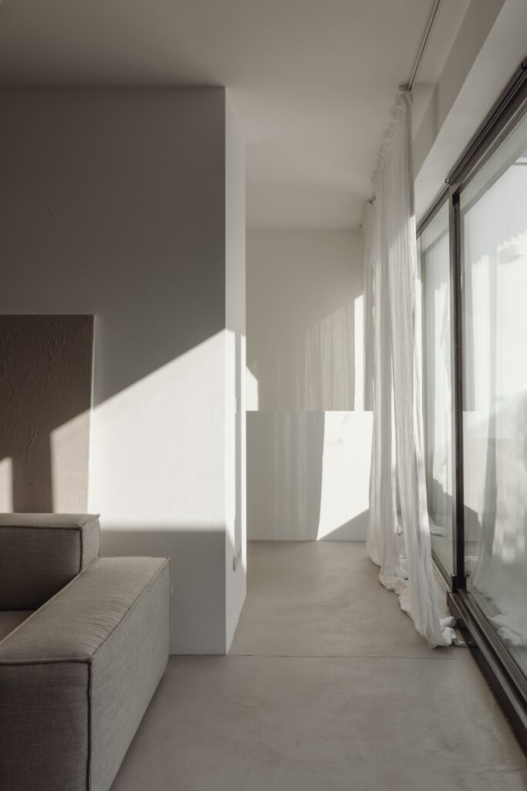
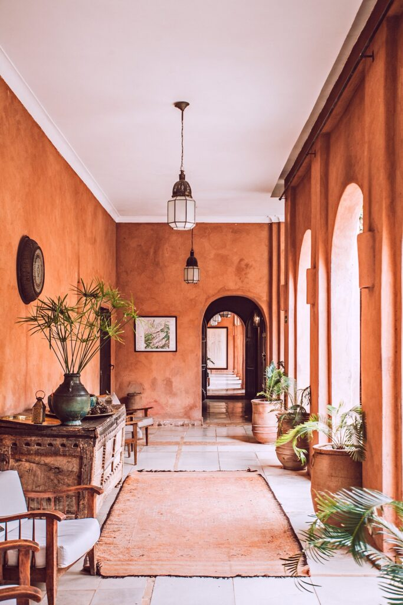
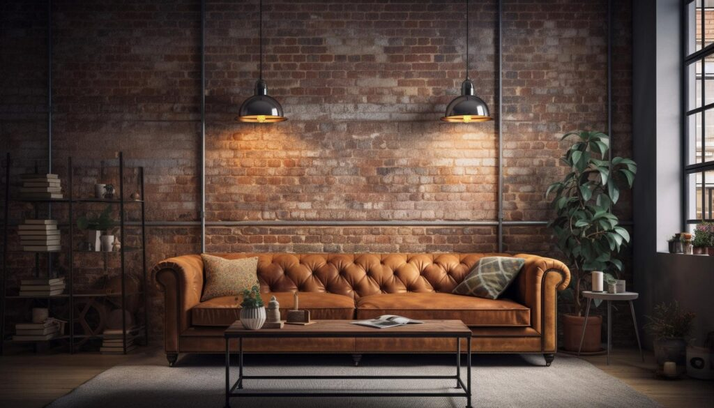
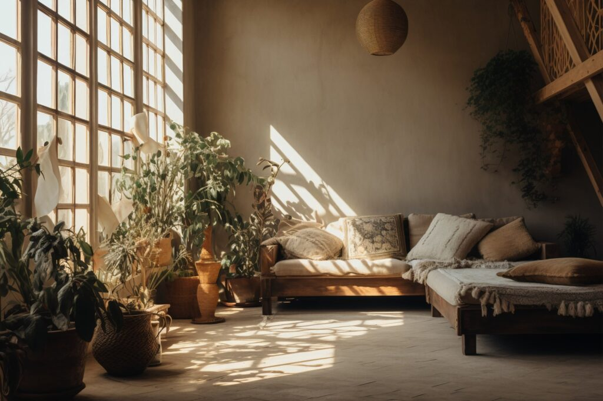
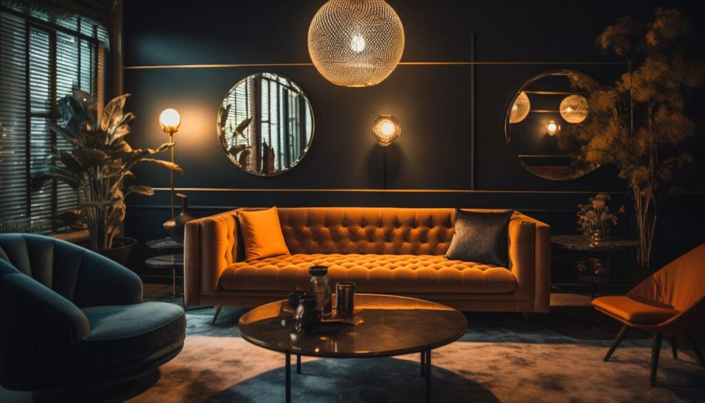
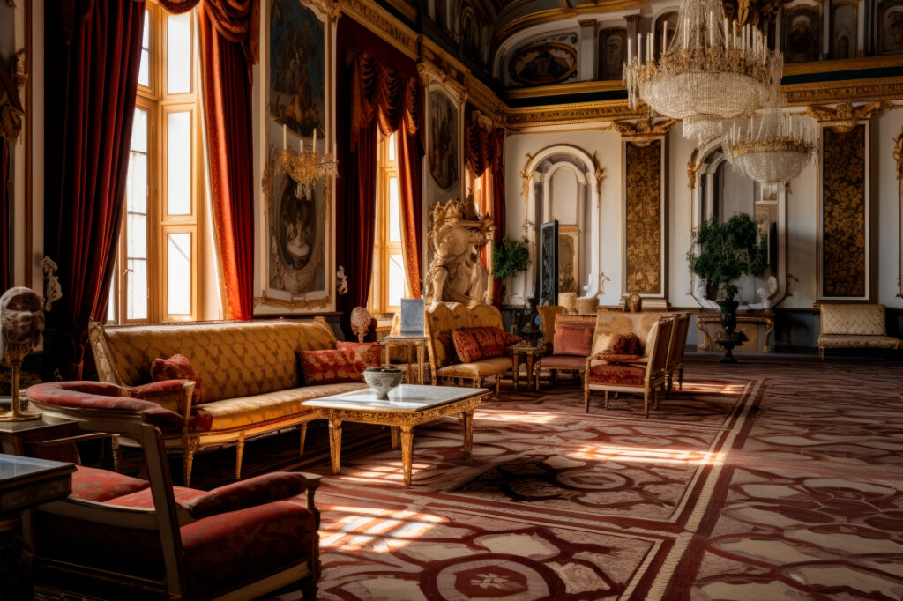
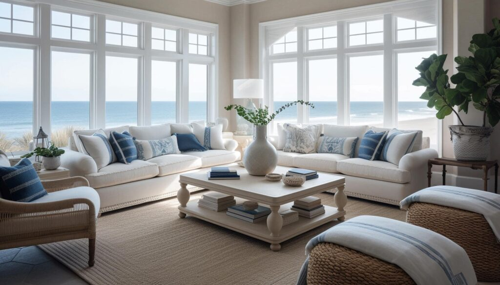
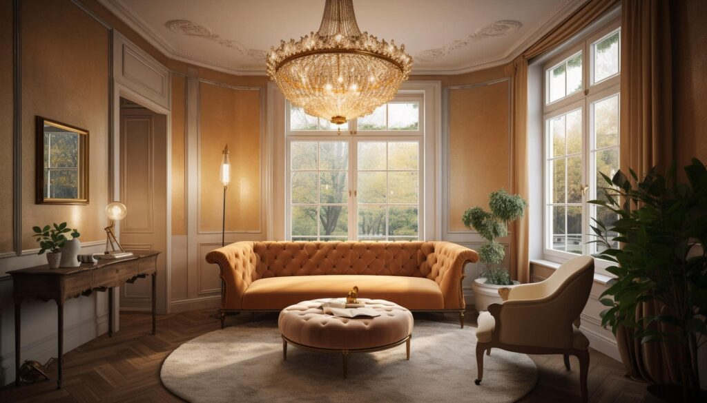

Projektowanie wnętrz to nie tylko wybór odpowiednich mebli, kolorów i akcesoriów. To także wybór stylu, który najlepiej odda charakter mieszkania, preferencje mieszkańców i ich potrzeby. Wnętrza mogą być klasyczne, nowoczesne, eklektyczne, a nawet inspirowane różnymi okresami historycznymi lub kulturami. Każdy styl wnętrza ma swoją własną estetykę, swoje zasady i swoją atmosferę. W tym artykule przyjrzymy się bliżej kilku popularnym stylom architektonicznym w projektowaniu wnętrz – glamour, kolonialnemu, industrialnemu, boho, minimalistycznemu, rustykalnemu, marynistycznemu oraz modern classic. Zanalizujemy ich cechy charakterystyczne, zastosowanie oraz sposoby, w jakie możemy je włączyć do naszych własnych przestrzeni mieszkalnych.
Architektura to przemyślane tworzenie przestrzeni. Tu nie chodzi o styl, ale o jakość przestrzeni, jakość światła i jakość powietrza.” – Peter Zumthor, szwajcarski architekt.
Minimalizm
Styl minimalistyczny w architekturze wnętrz to podejście oparte na prostocie i funkcjonalności. Charakteryzuje się on czystymi liniami, monochromatyczną paletą kolorów, zminimalizowaną ilością mebli i dekoracji oraz skupieniem się na istotnych elementach przestrzeni. Kluczowym aspektem minimalizmu jest “mniej znaczy więcej” – każdy element w przestrzeni ma swoje uzasadnione miejsce i funkcję. Przykładami wnętrz minimalistycznych mogą być nowoczesne apartamenty z białymi ścianami, dużymi oknami, prostymi meblami o geometrycznych kształtach, i niewielką ilością ozdobnych przedmiotów. Materiały używane w stylu minimalistycznym są często wysokiej jakości, takie jak szkło, stal nierdzewna, lub beton. Wszystko to razem tworzy przestrzeń, która jest nie tylko estetyczna, ale też funkcjonalna i wygodna dla mieszkańców. Minimalizm w architekturze wnętrz to także świadome podejście do organizacji przestrzeni. Każdy przedmiot jest starannie dobierany, a przestrzeń jest uporządkowana tak, aby unikać niepotrzebnego bałaganu. Oznacza to, że meble i akcesoria są często wielofunkcyjne, a przechowywanie jest ukryte lub zminimalizowane. Oświetlenie w minimalistycznych wnętrzach jest zwykle dyskretne, z naciskiem na naturalne światło, a także zastosowanie efektownego oświetlenia punktowego czy liniowego. Co więcej, minimalizm nie oznacza braku komfortu czy przytulności – za pomocą miękkich tkanin, poduszek czy dywanów można nadać wnętrzu ciepła i wygody. W ten sposób, styl minimalistyczny w architekturze wnętrz staje się nie tylko wyrazem nowoczesności i prostoty, ale także tworzy funkcjonalne i komfortowe przestrzenie do życia.

Rustykalny
Styl rustykalny w architekturze wnętrz jest inspirowany tradycyjną wiejską estetyką, łącząc elementy naturalności, prostoty i ciepła. Charakteryzuje się wykorzystaniem surowych, naturalnych materiałów takich jak drewno, kamień, cegła czy metal. Wnętrza rustykalne są często przytulne i pełne charakteru, z eksponowanymi belkami sufitowymi, kamiennymi kominkami, a także solidnymi, drewnianymi meblami. Paleta kolorów w stylu rustykalnym jest zazwyczaj ciepła i ziemiasta, z odcieniami brązu, beżu, zielonego czy czerwonego. Co więcej, rustykalność wnętrza może być podkreślona przez dodatki takie jak ręcznie tkane dywany, ceramika, czy tkaniny w tradycyjne wzory. Przykłady wnętrz w stylu rustykalnym to często domy na wsi, górskie chatki, czy nawet miejskie apartamenty, które pragną nadać swojemu wnętrzu nieco wiejskiego uroku. Ważnym elementem rustykalnych wnętrz jest także bliskość z naturą – dużo roślinności, widok na zielone otoczenie czy nawet niewielkie oczka wodne mogą znacząco podnieść atmosferę wnętrza. Wszystko to razem tworzy przestrzeń, która jest nie tylko estetyczna, ale też wygodna i pełna ciepła domowego ogniska. W stylu rustykalnym istotną rolę odgrywa także autentyczność i tradycja. Wnętrza często oddają hołd lokalnym rzemiosłom i tradycjom, a także nawiązują do historycznych stylów architektonicznych regionu. Dlatego też rustykalne wnętrza mogą różnić się w zależności od lokalizacji, np. rustykalny styl amerykański będzie się różnił od rustykalnego stylu śródziemnomorskiego czy alpejskiego. Dodatkowo, rustykalność nie wyklucza nowoczesnych udogodnień – współczesne rozwiązania technologiczne, takie jak inteligentne systemy domowe czy energooszczędne rozwiązania, mogą być wkomponowane w tradycyjny wystrój bez zakłócania jego charakteru. W efekcie, styl rustykalny w architekturze wnętrz oferuje idealne połączenie tradycji i komfortu, tworząc przestrzeń, która jest jednocześnie autentyczna i funkcjonalna, a jednocześnie przytulna i inspirująca.

Industrialny
Styl industrialny w architekturze wnętrz czerpie inspirację z estetyki fabryk i magazynów z czasów rewolucji przemysłowej, co przekłada się na surowy i minimalistyczny charakter przestrzeni. Charakterystyczne dla tego stylu są niewykończone, surowe materiały takie jak beton, stal, cegła, szkło oraz metal, które stanowią nie tylko elementy konstrukcyjne, ale także dekoracyjne. Wnętrza industrialne często mają wysokie sufit, otwarte przestrzenie oraz eksponowane instalacje takie jak rury, kable czy kanały wentylacyjne. Paleta kolorów jest zazwyczaj neutralna, z dominacją szarości, brązów i czerni, co dodatkowo podkreśla surowy charakter wnętrza. Przykłady wnętrz w stylu industrialnym to często lofty, które powstały w wyniku adaptacji starych przemysłowych budynków na cele mieszkalne, a także nowoczesne restauracje, kawiarnie czy biura, które pragną stworzyć nieco surową i minimalistyczną atmosferę. Meble w stylu industrialnym często są proste, funkcjonalne, a ich design jest inspirowany meblami z epoki przemysłowej – stoły z metalowymi nogami, krzesła ze stalowymi ramami, szafki na kółkach itp. Dodatki w tym stylu to często stare znaki przemysłowe, żarówki Edisona, metalowe półki czy graficzne plakaty, które wspierają surowy i nieco chłodny klimat wnętrza. Wszystko to razem tworzy przestrzeń, która jest nie tylko estetyczna, ale także funkcjonalna i pełna nowoczesnego uroku. W stylu industrialnym ważną rolę odgrywa również kontrast między surowymi materiałami a miękkimi elementami wykończeniowymi, co pozwala na złagodzenie chłodnej atmosfery przestrzeni. Na przykład, puszyste dywany, miękkie kanapy czy zasłony z naturalnych tkanin mogą dodać ciepła i komfortu, tworząc równowagę między surowością a przytulnością. Wnętrza industrialne często łączą się też z innymi stylami, takimi jak skandynawski czy boho, co pozwala na stworzenie unikatowej mieszanki, która jest zarówno nowoczesna, jak i przytulna. Pomimo surowego charakteru, styl industrialny może być również bardzo osobisty i ciepły, jeśli zostanie odpowiednio zaaranżowany. Przy użyciu odpowiedniego oświetlenia, roślinności i osobistych pamiątek, wnętrza industrialne mogą stać się miejscami pełnymi życia i charakteru. W efekcie, styl industrialny w architekturze wnętrz oferuje wiele możliwości dla tych, którzy szukają nowoczesnej, nieco surowej estetyki, ale jednocześnie cenią sobie funkcjonalność i komfort mieszkania.

Boho
Styl boho, zwany również bohemian, to eklektyczna i swobodna estetyka, która czerpie inspirację z różnorodnych kultur i epok, tworząc przestrzeń pełną życia, kolorów i tekstur. Charakteryzuje się wykorzystaniem bogatych i żywych kolorów, takich jak czerwień, pomarańcz, fiolet czy turkus, a także różnorodnych wzorów i materiałów, takich jak tkaniny, drewno, rattan, ceramika czy metal. Wnętrza w stylu boho są często pełne roślinności, miękkich tekstyliów, takich jak poduszki, dywany czy zasłony, oraz różnorodnych akcesoriów, takich jak lampiony, lustra czy obrazy. Przykłady wnętrz w stylu boho to często klimatyczne mieszkania w starych kamienicach, artystyczne pracownie czy przytulne kawiarnie. Meble w stylu boho są zwykle nieformalne i wygodne, a ich design często czerpie inspirację z mebli ludowych czy etnicznych. Dodatki w tym stylu to często ręcznie wykonane przedmioty, takie jak ceramika, dywany czy tekstylia, które dodają osobistego charakteru wnętrzu. Wnętrza w stylu boho są pełne osobistych pamiątek, rodzinnych zdjęć, książek czy roślin, co nadaje im niepowtarzalny i osobisty charakter. Wszystko to razem tworzy przestrzeń, która jest nie tylko estetyczna, ale także wygodna i inspirująca, zachęcając do twórczego wyrazu i swobodnego stylu życia. Styl boho w architekturze wnętrz podkreśla indywidualność i swobodę wyboru. W przestrzeniach boho nie ma sztywnych zasad ani ograniczeń – można łączyć różne style, epoki i kultury, co pozwala na wyrażenie swojej osobowości i twórczej wizji. Wnętrza boho często ewoluują i zmieniają się wraz z czasem, dostosowując się do potrzeb i upodobań mieszkańców. To, co jest najważniejsze w tym stylu, to komfort, przytulność i osobista historia, którą wnętrze opowiada. W efekcie, styl boho w architekturze wnętrz staje się nie tylko estetycznym wyborem, ale także stylem życia, który pozwala na swobodę wyrazu i twórcze eksperymenty w przestrzeni mieszkalnej.

Glamour
Styl glamour w architekturze wnętrz, znany również jako hollywoodzki lub luksusowy, to wyrafinowana estetyka, która łączy w sobie przepych, elegancję i blask. Charakteryzuje się on wykorzystaniem lustrzanych powierzchni, lśniących metalów, pluszowych tkanin, a także bogatych kolorów, takich jak złoto, srebro, czerń czy biel. Wnętrza glamour są pełne blichtru, z wielkimi żyrandolami, aksamitnymi kanapami, marmurowymi blatami, oraz bogatymi dodatkami, takimi jak dekoracyjne poduszki, zasłony czy lustra w bogatych ramach. Przykłady wnętrz w stylu glamour to często luksusowe apartamenty, ekskluzywne hotele czy rezydencje gwiazd filmowych. Meble w stylu glamour są zwykle zaokrąglone, wygodne i eleganckie, a ich design jest często inspirowany stylami retro czy art deco. Dodatki w tym stylu to często bogato zdobione ramy na zdjęcia, świeczniki, wazony czy inne dekoracyjne przedmioty, które dodają wnętrzu wyrafinowanego charakteru. Wnętrza glamour są pełne detali, które przyciągają uwagę i tworzą wrażenie luksusu i wygody. Wszystko to razem tworzy przestrzeń, która jest nie tylko estetyczna, ale także wygodna i elegancka, zachęcając do relaksu i poczucia wyjątkowości. W stylu glamour ważną rolę odgrywa również światło. Oświetlenie jest starannie projektowane, aby podkreślić detale wnętrza, tworzyć przytulną atmosferę i dodawać blasku przestrzeni. Lampy, żyrandole i lampki nocne są często w kształcie geometrycznych wzorów lub stylizowanych na lata dwudzieste XX wieku, co dodatkowo podkreśla wyrafinowany charakter wnętrza. Wnętrza glamour mogą być także połączone z innymi stylami, takimi jak modern classic czy nawet eklektycznym boho, co pozwala na stworzenie unikatowej mieszanki, która jest zarówno luksusowa, jak i pełna osobistego charakteru. Pomimo przepychu i elegancji, wnętrza glamour mogą być również funkcjonalne i komfortowe, dzięki odpowiedniemu zaplanowaniu przestrzeni i wyborowi mebli oraz dodatków, które są nie tylko piękne, ale także praktyczne. W efekcie, styl glamour w architekturze wnętrz oferuje wiele możliwości dla tych, którzy cenią sobie luksus, elegancję i wygodę, tworząc przestrzeń, która jest nie tylko piękna, ale także wyjątkowo komfortowa i przytulna.

Kolonialny
Styl kolonialny w architekturze wnętrz jest inspirowany architekturą okresu kolonizacji, szczególnie w Ameryce i Azji, co przekłada się na eklektyczną i wyrafinowaną estetykę, która łączy elementy tradycyjne z egzotycznymi wpływami. Charakteryzuje się on ciężkimi, drewnianymi meblami, kremowymi lub białymi ścianami, roletami z bambusa, oraz egzotycznymi akcentami, takimi jak rzeźby, tkaniny czy ceramika. Wnętrza kolonialne są zazwyczaj przestronne i eleganckie, z wysokimi sufitami, dużymi oknami, oraz bogatymi dodatkami, takimi jak żyrandole, lustra czy obrazy. Przykłady wnętrz w stylu kolonialnym to często stare rezydencje w Nowej Anglii, plantacyjne domy na południu Stanów Zjednoczonych, czy kolonialne wille w Indiach czy Afryce. Meble w stylu kolonialnym są zwykle masywne i solidne, a ich design jest często inspirowany meblami epoki wiktoriańskiej czy edwardiańskiej. Dodatki w tym stylu to często ręcznie wykonane przedmioty, takie jak ceramika, tkaniny czy dywany, które dodają wnętrzu wyjątkowego charakteru. Wnętrza kolonialne są pełne historii i tradycji, a jednocześnie oferują komfort i elegancję, tworząc przestrzeń, która jest nie tylko estetyczna, ale także funkcjonalna i wygodna. W stylu kolonialnym ważną rolę odgrywa również rozmieszczenie mebli i elementów dekoracyjnych. Wnętrza są zwykle symetryczne i zorganizowane, co podkreśla formalny i elegancki charakter przestrzeni. Rośliny w donicach, wiklinowe kosze, drewniane żaluzje, czy mosiężne lampy mogą dodatkowo podkreślić kolonialny charakter wnętrza. Dodatkowo, wnętrza kolonialne często łączą się z innymi stylami, takimi jak rustykalny czy marynistyczny, co pozwala na stworzenie unikatowej mieszanki, która jest zarówno tradycyjna, jak i pełna osobistego charakteru. Pomimo formalności i tradycji, wnętrza kolonialne mogą być również bardzo przytulne i rodzinne, dzięki zastosowaniu miękkich tkanin, kominków czy domowych dekoracji, które dodają ciepła i intymności. W efekcie, styl kolonialny w architekturze wnętrz oferuje wiele możliwości dla tych, którzy cenią sobie tradycję, elegancję i komfort, tworząc przestrzeń, która jest nie tylko piękna, ale także wyjątkowo funkcjonalna i przytulna.

Marynistyczny
Styl marynistyczny, znany również jako styl nadmorski, jest inspirowany atmosferą wybrzeża, co przekłada się na lekką, przewiewną i swobodną estetykę, która łączy w sobie naturalność i świeżość. Charakteryzuje się on jasnymi kolorami, takimi jak biały, niebieski czy beżowy, a także naturalnymi materiałami, takimi jak drewno, rattan czy lniane tkaniny. Wnętrza marynistyczne są zazwyczaj pełne światła, z dużymi oknami, prostymi meblami i funkcjonalnymi dodatkami, które przypominają o morzu, takie jak muszle, latarnie morskie czy obrazy z widokiem na plażę. Przykłady wnętrz w stylu marynistycznym to często domy nadmorskie, apartamenty na wakacje, czy nawet miejskie mieszkania, które chcą wprowadzić trochę nadmorskiego klimatu do swojego wnętrza. Meble w stylu marynistycznym są zwykle proste i funkcjonalne, z jasnymi kolorami i naturalnymi materiałami, które podkreślają świeżość i lekkość wnętrza. Dodatki w tym stylu to często przedmioty związane z morzem, takie jak obrazy statków, muszle, czy modelowe łodzie, które dodają wnętrzu marynistycznego charakteru. Wnętrza marynistyczne są pełne świeżości, spokoju i przestronności, a jednocześnie oferują komfort i funkcjonalność, tworząc przestrzeń, która jest nie tylko estetyczna, ale także wygodna i inspirująca. W stylu marynistycznym ważną rolę odgrywa także swobodne i nieformalne podejście do aranżacji przestrzeni. Wnętrza są zwykle przyjazne i przytulne, z miękkimi kanapami, poduszkami i kołdrami, które zapewniają komfort i relaks. Zastosowanie rolet zamiast ciężkich zasłon, lekkich tkanin i naturalnych materiałów, takich jak drewno czy bambus, dodatkowo podkreśla lekkość i świeżość wnętrza. Wnętrza marynistyczne mogą być także połączone z innymi stylami, takimi jak skandynawski czy boho, co pozwala na stworzenie unikatowej mieszanki, która jest zarówno świeża, jak i pełna osobistego charakteru. Pomimo swobodnego charakteru, wnętrza marynistyczne mogą być również eleganckie i wyrafinowane, dzięki starannemu dobieraniu mebli, dodatków i kolorów, które tworzą spójną i harmonijną przestrzeń. W efekcie, styl marynistyczny w architekturze wnętrz oferuje wiele możliwości dla tych, którzy cenią sobie lekkość, świeżość i komfort, tworząc przestrzeń, która jest nie tylko piękna, ale także wyjątkowo funkcjonalna i przytulna.

Modern Classic
Styl Modern Classic w architekturze wnętrz to połączenie nowoczesności z klasycznymi elementami, które łączy w sobie wygodę i funkcjonalność z elegancją i tradycją. Charakteryzuje się on wykorzystaniem prostych linii, neutralnych kolorów, takich jak szarość, biel czy beż, a także materiałów wysokiej jakości, takich jak drewno, marmur czy metal. Wnętrza Modern Classic są zazwyczaj przestronne i dobrze oświetlone, z wysokimi sufitami, dużymi oknami oraz starannie zaprojektowanym oświetleniem. Przykłady wnętrz w stylu Modern Classic to często eleganckie apartamenty w centrum miasta, rezydencje na przedmieściach czy nowoczesne biura. Meble w stylu Modern Classic są zwykle nowoczesne, ale z nutą klasycznego designu, a ich kształty są prostokątne i geometryczne. Dodatki w tym stylu to często minimalistyczne obrazy, abstrakcyjne rzeźby czy designerskie lampy, które dodają wnętrzu nowoczesnego charakteru. Wnętrza Modern Classic są pełne harmonii, spokoju i równowagi, a jednocześnie oferują wygodę i funkcjonalność, tworząc przestrzeń, która jest nie tylko estetyczna, ale także wygodna i inspirująca. W stylu Modern Classic ważną rolę odgrywa również dbałość o detale i staranne wykończenie każdego elementu wnętrza. Wybór materiałów wysokiej jakości, precyzyjne wykonanie mebli i dodatków, a także staranne dopasowanie kolorów i wzorów, wszystko to przyczynia się do stworzenia przestrzeni, która jest zarówno funkcjonalna, jak i estetyczna. Wnętrza Modern Classic mogą być także połączone z innymi stylami, takimi jak glamour czy industrial, co pozwala na stworzenie unikatowej mieszanki, która jest zarówno nowoczesna, jak i pełna osobistego charakteru. Pomimo nowoczesnego i funkcjonalnego charakteru, wnętrza Modern Classic mogą być również przytulne i rodzinne, dzięki zastosowaniu miękkich tkanin, ciepłego oświetlenia czy kominków, które dodają ciepła i intymności. W efekcie, styl Modern Classic w architekturze wnętrz oferuje wiele możliwości dla tych, którzy cenią sobie nowoczesność, funkcjonalność i elegancję, tworząc przestrzeń, która jest nie tylko piękna, ale także wyjątkowo komfortowa i przytulna.
